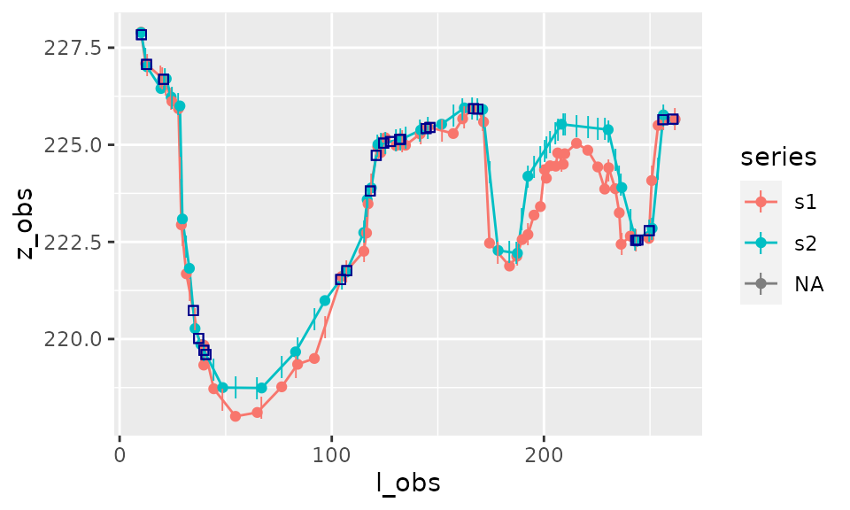

riverbed
riverbed.Rmd
Principle of the area calculation
To calculate the area between the curves we need to interpolate the data and calculate intersects between the two curves:

Use of area_between()
This, as well as the calculation of corresponding trapezia, is realised by the function area_between().
result_area <- area_between(s1,s2)
result_area
#> $data
#> # A tibble: 237 x 13
#> l z1 p z2 a type l_obs z_obs series zmin zmax lmin
#> <dbl> <dbl> <chr> <dbl> <dbl> <fct> <dbl> <dbl> <chr> <dbl> <dbl> <dbl>
#> 1 10.1 228. observ… 228. 0 <NA> 10.1 228. s1 NA NA NA
#> 2 10.1 228. observ… 228. 8.68e-4 upper 10.1 228. s2 NA NA NA
#> 3 10.3 228. inters… 228. NA upper NA NA <NA> NA NA NA
#> 4 10.3 228. inters… 228. -1.13e-1 lower NA NA <NA> NA NA NA
#> 5 12.3 227. observ… 227. 0 <NA> 12.3 227. s1 NA NA NA
#> 6 12.3 227. interp… 227. -2.40e-2 lower NA NA s2 NA NA NA
#> 7 12.7 227. inters… 227. NA lower NA NA <NA> NA NA NA
#> 8 12.7 227. inters… 227. 4.79e-3 upper NA NA <NA> NA NA NA
#> 9 12.9 227. interp… 227. 0 <NA> NA NA s1 NA NA NA
#> 10 12.9 227. observ… 227. 1.14e+0 upper 12.9 227. s2 NA NA NA
#> # … with 227 more rows, and 1 more variable: lmax <dbl>
#>
#> $area
#> [1] -98.07248
#>
#> $area_by_type
#> # A tibble: 2 x 2
#> type area
#> <fct> <dbl>
#> 1 upper 7.76
#> 2 lower -106.
#>
#> $sigma_area
#> [1] 0The output of the function corresponds to
- total area between curves (i.e. positive area - negative area)
- area between curves according to whether first curve is above the second curve (“upper”) or below (“lower”)
- data with all coordinates of interpolated points and intersects, used to calculate the area of trapezia (and which will be used by function
plot_area())
Note that it is also possible to calculate the area between one longitudinal series \(s_1=(l_1,z_1)\) and a constant horizontal value \(h\).
result_area_h <- area_between(s1,h=225)Plot of area
plot_area(result_area)If the distinction between upper and lower area is irrelevant then it is possible not to distinguish these two types on the plot:
plot_area(result_area,distinguish_type=FALSE)The plotting function plot_area() can also be used with just one series and constant horizontal level \(h\), as calculated earlier:
plot_area(result_area_h)